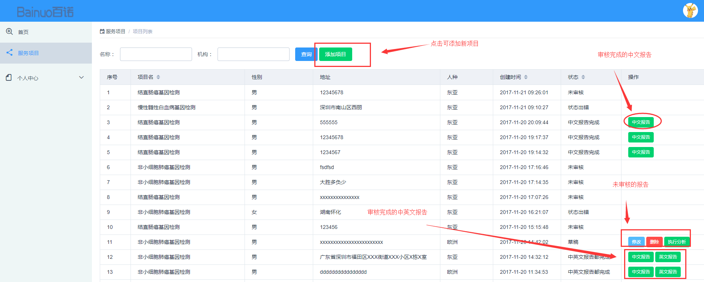
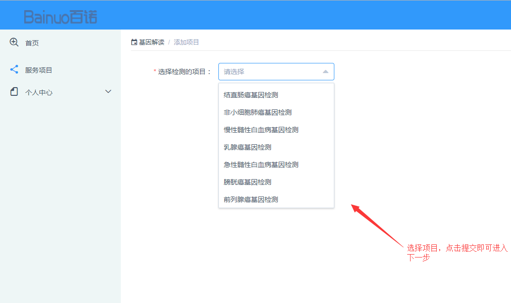
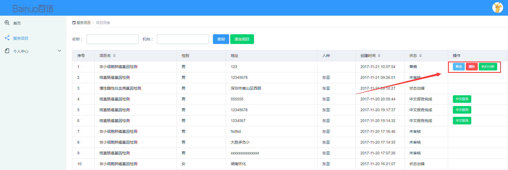
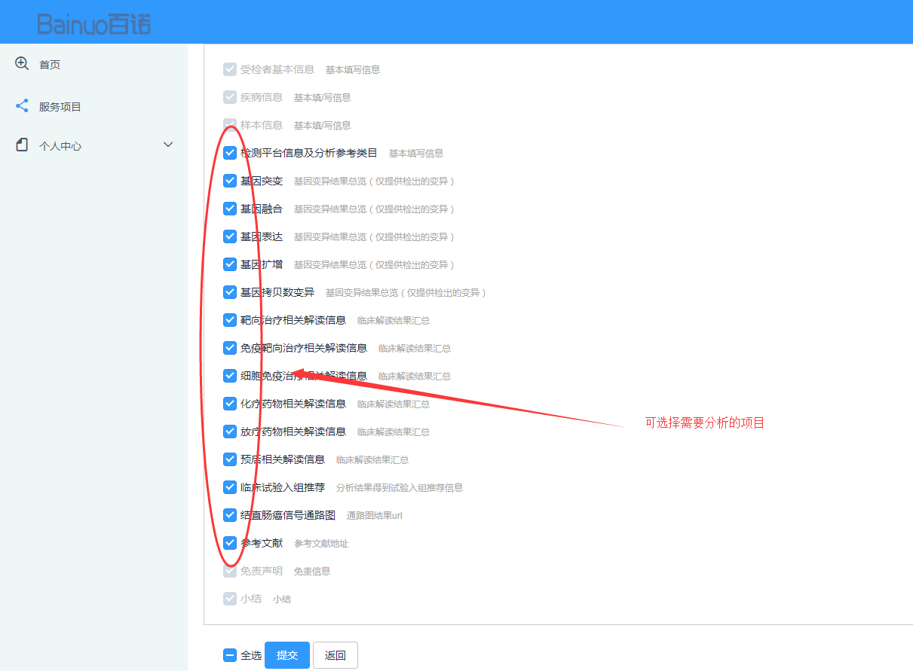

服务项目功能说明
首页中添加的项目都会显示在服务项目中，列表中会显示审核、未审核、草稿、无效的项目状态。点击“添加”，可选择项目进行添加。完成后项目会显示为未审核状态，“草稿”状态的项目可进行修改 、删除、执行分析的操作，审核完成的项目，可查看其“中文”、“英文”、或“中英文”报告；

添加项目
a、点击“添加项目”，进入到项目选择界面，选择需要添加的类型，即可进行项目添加；
修改、删除、执行分析

a、选择“草稿”状态的项目，点击“修改”，可进入项目详情界面修改项目，完成点击再次点击“提交”即可；
b、点击“删除”，弹框提示，选择“确认”即可删除该项目
c、点击“执行分析”，可进入需要分析的项目界面，选择需要分析的项目，完成点击“提交”,项目即可进入到审核状态；
